新年伊始，《南方周末》就成为天朝舆论的焦点。此事目前暂告一段落，今天转载几篇网文、若干照片、若干网友评论。希望此事不要太快被淡忘。
关于此事的详细过程，可以参考维基百科的“这个页面”。
（编程随想注：可能是由于“明鏡新聞網”的网站结构调整，本文原始链接报 404 错误）
（编程随想注：“自曲新闻”这个网站貌似没了，其官方 Twitter 也不更新了，这篇文章的原始链接已经【失效】）
（编程随想注：可能是由于“RFI/法广”的网站结构调整，本文原始链接报 404 错误）
（编程随想注：有不少民众去《南方周末》总部表达支持，其他省份的网友用各种方式表示支持）
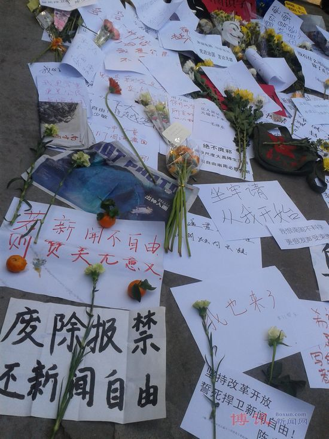
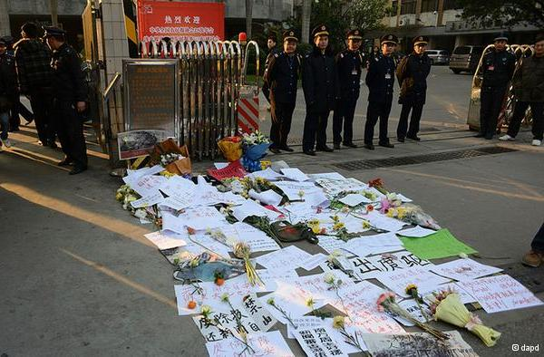

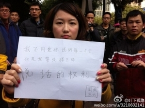
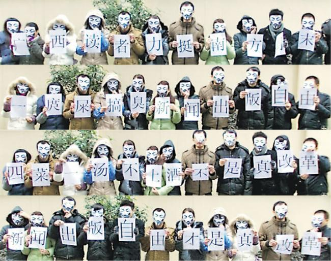
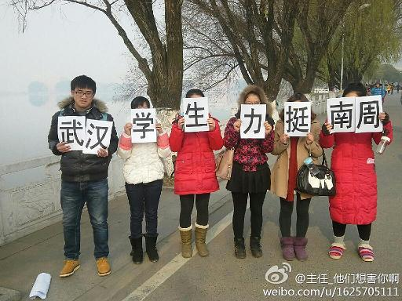
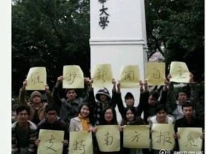
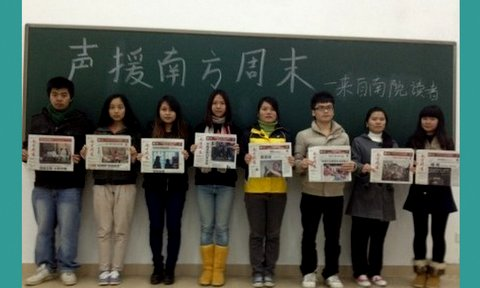
（编程随想注：很多网站用【藏头诗】的方式声援《南方周末》）
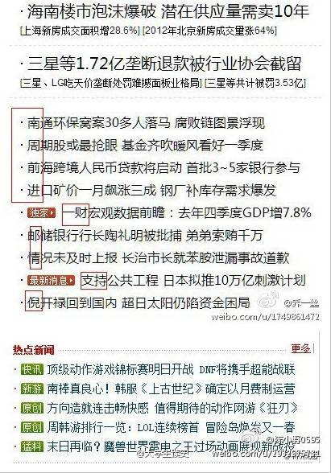
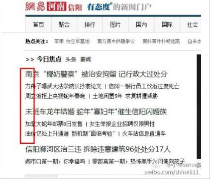

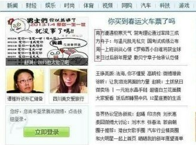
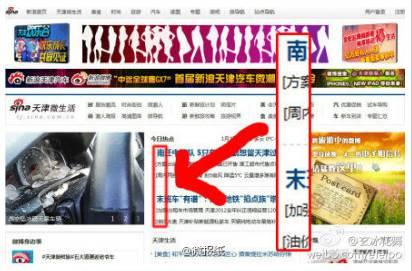
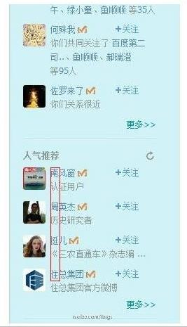
（编程随想注：朝廷喉舌把那些支持《南方周末》，反对新闻审查的民众说成是：被“境外敌对势力”利用。以下是网友的评论）
王朔：
你们让老百姓改变，称之为改革；
老百姓让你们改变，就变成颠覆；
你们抢夺老百姓的财产，称之为发展；
老百姓保护自己的财产，就变成暴力抗法；
你们全副武装上街，称之为维稳；
老百姓上街散散步，就变成敌对势力。
你大爷的！天下哪有这样的道理？
【伟大的逻辑】
喜欢美国制度的是卖国贼，喜欢苏联制度的是爱国者；
没占中国一分国土的是侵略者，占了中国百万平方公里土地的是盟友；
援助中国的是敌人，向中国要援助的是朋友；
为国人争取权利的是汉奸，拥护极权专制的是“精忠报国”；
靠公权力掠夺财富的是光荣的人民公仆，自我奋斗获得财富的是万恶的资产阶级。
【“里通外国” 和 “境外势力”】
1958年彭德怀说粟裕“里通外国”；
1959年刘少奇说彭德怀“里通外国”；
1968年周恩来负责刘少奇专案组，定刘少奇“里通外国”；
1973年毛泽东授意政治局批周恩来“里通外国”。
俱往矣，改革开放，时代进步，领导同志家家都是“里通外国”。
所以，宣宣只敢说“境外势力”，不敢说“里通外国”，否则就成了指桑骂槐、含沙射影。
【中共才是境外势力支持的】
1920年苏联人维经斯基受共产国际指派来华创立中国共产党。
1921年中共在共产国际的帮助下成立，并成为其支部，每月接受来自苏联的活动经费，从1921年每月1200元至1926年每月14000元。
1927年共产国际拨经费110万卢布、30万美元、10万中国元、一万元沪钞及大批军事物资，资助中共发动南昌暴动、秋收暴动和广州暴动，并在中国建立苏联的卫星政权中华苏维埃政权...
1925年张奚若曾撰文《苏俄究竟是不是我们的朋友？》文中说：帝国主义的国家仅仅吸取了我们的资财，桎梏我们的手足，苏俄竟然收买了我们的良心，腐蚀了我们的灵魂; 帝国主义只想愚弄我们的官僚和军人，苏俄竟然愚弄我们的青年和学者......我倒要问问不是敌人是甚么？！
李承鹏：
这些境外势力太可恶，他们住在美国富人区，却粗暴干涉中国内政问题，他们偷走中国人很多钱，却存在瑞士银行里。他们子女开着法拉利却从不关心中国校车的惨剧。
最可恨的是，他们竟操纵某些中国媒体，凡见中国公民出谋划策，提倡毛泽东早就提倡过的宪政，就骂这些公民是汉奸，还送去劳教...
快抓出这些境外势力！
祖宗是德国的马克思，
导师是俄国的列宁，
干爹是格鲁吉亚的斯大林，
意识形态是欧洲出产的马列主义，
体制是前苏联模式，
却一本正经说“不搞西方那一套”
“境外敌对势力”随便说一句话，就可以欺骗煽动亿万“不明真相”的中国人。
那为什么你们天天说，天天喊，报纸说，电视唱，可就是没有人听呢？
大多官员的家属和财产都在境外，所以他们的境外势力相当强大。
【境外势力的标配】
上下班开的是奥迪，房产买在澳大利亚，手上戴瑞士名表，腰上系意大利皮带，老婆挎法国LV包，儿子去英国留学，连孙子辈都拿到了美国护照。
除了西方的XX制度被你们拒绝，西方国家所有的好东西都成了你们的标配。
潘石屹：
那一年，我因转发北京空气质量被一领导请去“喝茶”。
刚进门，领导手中拿着《华尔街日报》的翻译件。
他对我说：“你被境外反华势力利用了！你要知道这是什么性质的问题？”
【到底谁是敌对势力】
曾有领导对我谈话说：你的出发点和动机都是好的，但一定要注意。有些事很容易被境外敌对势力利用...
我实在理解不了，出于好的目的和动机去做事情，怎么就会有不利国家的后果。
难道领导们都希望，我们做事不要有好的目的和动机？
到底谁是敌对势力？困惑中...
【万能的“境外敌对势力”啊】
为啥所有正义的本应理直气壮的甚至平凡的一件事，最后都变了境外势力操控？
这是不是证明了所有猥琐的残暴的无人性的事情都是党一手搞出来的啊？
不知怎地，忽然就对“境外势力”亲近起来，境外势力快点侵略这个党吧！
一天到晚喊阴谋论，而那些有钱有权的人的家属和钱都被愉快地送去“敌对”国家。
境外势力的双亲都在人民大会堂里面坐着呢。他们的子孙都到了境外，而我们却成了“被利用的、不明真相的群众”。
当初就是境外敌对势力揭露了三鹿。
啥是“井外势力”？
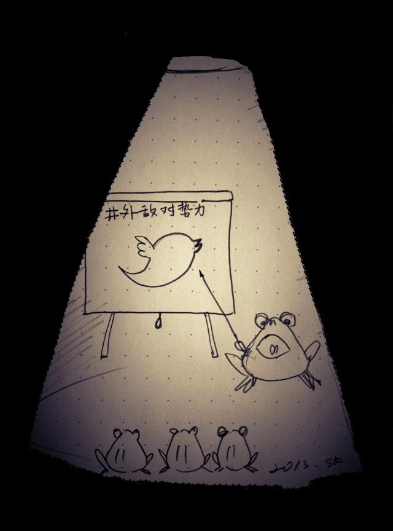
（编程随想注：此次“南周事件”，伊能静人气大涨。摘录她的几条微博）
伊能靜：
打油詩創作
我想说话，他说你别说。
我说我想说话，他说你们戏子说话无知。
我说我想说我想说的话，他说你读错过字所以你想说的话也是错的。
我说我一定要说我要说的。他终于气急败坏的拿出五毛给我，说你一定要说就照我说的说吧！
伊能静：
你的暴怒，让我懂得自己正确。你的掩饰，让我相信自己正直。你的疯狂，让我看见自己清醒。你的杀戮，让我知道自己活着。
伊能静：
被遮盖的眼依然能透迸光，被捂住的耳朵会因为安静而听的更细微，被缝合的嘴能学会语言之外的表达，被捆绑的双手会悟出自由，被掩埋的死亡将永远存活。
伊能静：
不要相信你的眼睛，因为事实已被拼贴。不要听信你的耳朵，因为声音已被遮蔽。不要吶喊你的不公，因为公平需要奇迹。不要质问真相，因为真相面目模糊。
伊能靜：
我不是不知道，南方已远。远的我看不清那方的真实，只剩下此刻的黑暗。我不是不知道，南方已远。在此周围的呼唤，都已显的苍白。末世的警钟响起，我却已看不见敲钟人，他早已坠落，只因遥远南方离去后的黑暗。
伊能静：
攻击我的身世毫无所用。我来自228家庭，外公杨元丁是基隆市副议长，抗日被日本人三次逮捕。却被国民党开了六枪丢入河里。因为白色恐怖，我母亲开始悲剧的一生。走过专制，并不恨专制，我依然投票给国民党，却有更强的信念，知道自由的可贵。反对不是敌对，但良知知道，沉默的好人也许会变成邪恶的同盟。
伊能静：
攻击我过去的婚姻亦无所用。若外公没被杀，母亲不会沦落到离乡背井，我就不会因童年缺爱，而不懂爱是两个人的还原，而不是谁成为谁的。人的一生，不在此时此刻，从原生家庭而来，而原生家庭的背景从政治环境而来。歷史也一样，包含了现在、过去、未来，记取过去、争取现在、创造未来，才不枉走过大时代。
（下面是网友对她的评论）
She can be quiet，but she will not！
伊能静，但伊不肯静！
我之所以敬佩伊能静，并不是他说的那些话，我想在G+上随便拉出一个思想觉悟可能都不比伊能静要低。
我敬佩的是他站在艺人这个位子上，可以不计较个人发展前景。
这就像做生意一样，敢和政府闹矛盾，除非你不想再赚钱了！
再纵观娱乐圈的其它明星呢，大多明哲保身，趋利避害！
五岳散人：
这次真是让我对娱乐圈的明星刮目相看。
禁言 @伊能静，足以使一百万以上的台湾骑墙中间派变成坚定的台独分子。
台湾艺人伊能静公然干涉中国内政，在微博上大谈民主自由，极大的伤害了中国人民的感情。
现已遭新浪微博禁言，其在中国的演艺生涯恐怕也已走到尽头。
我们要警告所有艺人朋友们，学习成龙好榜样，站队正确说对话，不怕生儿子没屁眼！
中国医学科技已非常发达，看看房祖名，政府不会不管你们的。
伊能靜的微博被禁言。
她確實是個勇敢的人，不在於她被禁言，而是當下，大多數人選擇明哲保身時，她敢於說出真話。而且她深知代價，卻仍然堅持。
被伊能静闪瞎眼了，这水平直逼某些公知，关注下。
我操！连伊能静都享受喝茶待遇了！
如此下去，我们纳税人伤不起啊！
网友甲：
你是做什么的？叫着日本人的名字，伊能小姐。台湾人的身份，跑到中国大陆做政治宣传员？？
网友乙：
她叫伊能静是因为她养父是日本人，她为了报恩；她是台湾人，也是中国人，她怎么不能来大陆？
政治宣传？她一没替政党说话，二没替政策说话，三没替政府说话，怎么就成了政治宣传？
@李开复，@伊能靜，你们2个台湾人，在大陆混吃混喝，竟然还妄图颠覆中国政府，你们等着吧！
（编程随想注：不得不说，《环球屎报》的名声越来越臭了）
伊能静：
【环球时报这只狗】
乖乖，把门守好。只要咱在这里，这里就归咱管。若有谁说这里也是他的，你就咬。
乖乖，把门守好。咱有刀有枪，没人敢来，所以不用真咬，你吼吼就好。
狗仗人势你听过吧？你就仗着我吧，就算你不是真的狗，但你比狗还像样。
乖乖，我宰了你的同类，骨头给你咬，奖励你是因为，你的忠诚是我的骄傲！
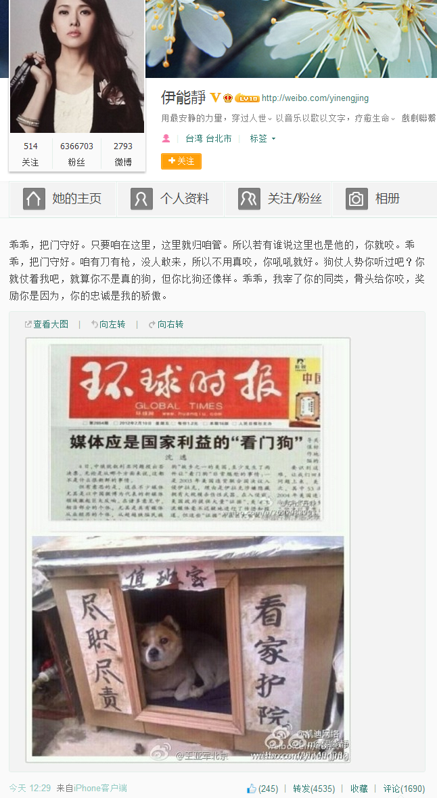 （某网友留言称，图中的《环球时报》为 PS，《媒体应是国家利益的“看门狗”》不是头版）
南都网刊登一则图集，名为“环球飞狗叼飞盘”
（无论我党把飞盘扔多远,《环球时报》总编胡锡进都能想法给叼回来）
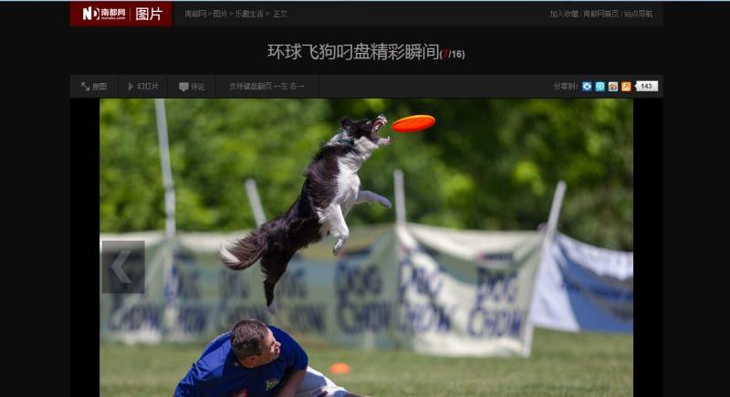
南都网刊登一则图集，名为“环球五毛钱币一览”
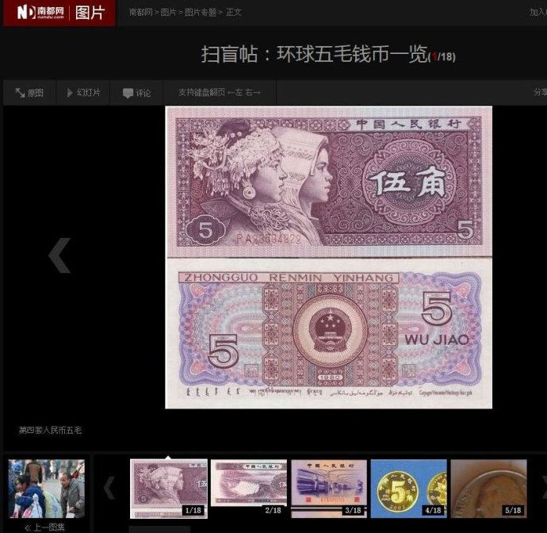
五岳散人：
环球时报牛逼在于，能够把一坨屎做成鱼香、宫保、酱烧、干炸等诸般口味，然后嚼得津津有味，并且质疑别人为什么不吃。
文三娃：
个人声明: 作为环球时报英文版前记者，我曾对总编辑 @胡锡进 先生部分新闻观有过认同。
近年来一些新闻事件中，你不但曲笔，更藏刀，令人心寒。大是大非前，恕难存昔日同事之谊，此告。
有些坏球不仅自己吃屎，还要劝所有的人吃屎，而且不遗余力的为吃屎很香寻找各种理论支持。
你关一个瞎子，奥运会就白开了：
你判一个律师，1000场红歌都白唱了；
你劳教一个大学生，纽约的广告牌白树了；
你整一家报馆，所有的四菜一汤都白吃了！
做这么多戏，光彩的肥皂泡，一个针尖大小的事实就戳破了。
对这个极权的厌恶源自于生活中每一个遭受屈辱的细节。
【致习近平】
崭新的2013年伴随新政如期而至，《南方周末》新年献词事件给了新政一记响亮的耳光......
喀嚓一声，破碎的不是我们的宪政梦，而是你曙光中的新政，枉费你新南巡路上仪态万千。
【近期部分被喝茶人士】
伊能静，李开复，任志强，叶隐，野渡，郭春平，易小荷，黄宾，袁奉初，金变玲，赖永献，刘远东。
【中国还是那个中国】
当你用发情的眼光看，她美若天仙：当你平心静气审视时，他还是那么中国。
春梦一不小心就变成了梦遗...
俺博客上，和本文相关的帖子（需翻墙）：
谈谈真理部对朝鲜战争的忽悠
关于抗日战争——谈谈真理部对抗战历史的篡改
谁是最可恨的人？——写给仇日愤青们
看看真理部是如何 PS 照片的
关于抹黑 Google——谈谈党国对舆论的操纵手法
每周转载：关于真理部的几篇旧文（网文5篇）
每周转载：关于天朝的【网络实名制】（网文5篇，评论若干）
★事件经过
关于此事的详细过程，可以参考维基百科的“这个页面”。
★网文5篇
◇《南方報系十三年來被整肅大事記 @ 明鏡新聞網》
（编程随想注：可能是由于“明鏡新聞網”的网站结构调整，本文原始链接报 404 错误）
2000年1月，《南方週末》靈魂人物、主編江藝平被調離，其後分管南方週末旗下的「21世紀報系」。
2001年5月，《南方週末》因調查報道張君案被大規模整肅，常務副主編、代理主編錢鋼被調離，副主編陳明洋被撤職。
2003年3月13日，創刊不久的《21世紀環球報道》突遭停刊，江藝平再被打壓。
2003年3月，《南方都市報》率先曝光SARS疫情，事後總編輯程益中被降職處理。
2003年4月，《南方週末》因朱鎔基專版被整肅，第1000期被迫「開天窗」。廣東省委宣傳部新聞處處長張東明出任主編，報社出現編輯記者辭職潮。
2003年4月，《南方都市報》報道孫志剛案，收容遣送制度終被廢除。
2004年1月，《南方都市報》總經理喻華峰、編輯程益中等四人被廣州執法部門以經濟犯罪之名逮捕，喻等人被判刑，「南都案」轟動一時。
2005年12月，參與創辦南方報系的總編楊斌和兩名副總編孫雪東、李多鈺被免職（三人均來自南方報業），約一百名報社員工罷工抗議。
2008年4月，《南都週刊》主筆長平因發表評論《西藏：真相與民族情緒》被免職，調任研究員。
2008年12月，江藝平再次被剝奪權力，調離《南方都市報》。
2009年11月，《南方週末》對美國總統奧巴馬的獨家專訪內容疑遭大幅刪減，報紙再次「開天窗」。
2011年1月，長平被南方報業解聘。
2011年3月，《南方週末》著名評論員笑蜀被南方報業除名。
2011年9月，《新京報》被北京市委宣傳部接管。
2012年5月，庹震出任廣東省委宣傳部長，加強審查和監管南方報系。
2013年1月，《南方週末》新年獻詞事件爆發。
◇《中国当局对声援南周人士采取措施 @ 自曲新闻》
（编程随想注：“自曲新闻”这个网站貌似没了，其官方 Twitter 也不更新了，这篇文章的原始链接已经【失效】）
自从1月6日晚上，南周新年献词风波因为一则“致读者”的消息扩大后，中国仿佛一夜进入了全民喝茶的时代，除了最早被警方带走或谈话的一些民主维权人士，地产界、科技界甚至艺人也被有关部门警告或禁言。他们的遭遇得到了网民的声援和关注。
1月7日，南方报业传媒集团门口，源源不断的民众到此处对南周进行声援，他们带来菊花和各式呼吁“新闻自由”的标语，当天广州大道中289号的场景通过社交网络传播甚广，不过之后一些直播的人士遭到了警方的重点关注。
六四天网8日报道称，浙江杭州异议人士吕耿松与毛庆祥因商谈南周事件，被警方传唤，而警方向毛庆祥出示的传唤证是“涉嫌煽动颠覆国家政权罪”，因而他们二人成为因《南方周末》事件首批遭警方抄家传唤的异议人士。直到9日，吕耿松、毛庆祥、任伟仁因谈论南周而被传唤的三人才回到家中。
7日上午到南方报业门口分发菊花，并对着警察拍摄的镜头摆出“V”型手势的网友@染香姐姐，她的照片和视频经过广泛传播之后，人们担心她会有被请“喝茶”的危险，她为此写出长微博，说“我希望用一种优雅的方式对抗，我戴口罩，不是担心被秋后算账，只是想抗议他们强奸媒体，强奸民间。我们的避言套其实就在我们的脑子里的。”随后她便遭到警方的约谈，她称租客因受到来自警方的压力，对她表示无法再租她的房子，而“染香姐姐”的微博，也已经转世到了第五世，而且有可能继续被封杀下去。
7日前往广州大道声援南周却被误认为主持人白岩松的作家阿丁，8日深夜和9日上午在家中遭到警方的约谈，据他幽默的说，“和警察谈了谈文学以及新闻采编签版流程”，告诉关心的人士不用担心。
广州作家野渡，因为7日前去声援南周，8日下午3点被警方以“非法集会罪”传唤到广州海珠区素社派出所长达7小时，期间还遭遇强制脱光衣服搜查，之后还被警方禁足，无法外出。维权律师江天勇8日一早便被警方找上门询问他的下落，理由是定位到江天勇的手机在家中，而他根本没有到广州声援南周，而是仍在北京。
另一名遭到谈话的是华远地产股份有限公司董事长任志强，他曾经因为出言大胆而被称为“任大炮”，他称去年已经5次“喝茶”，2012年北京暴雨他因为泄露伤亡数字不仅被约谈，还一度被禁言。在和好友潘石屹就喝茶与真相问题发表看法后，任志强7日深夜称，接到电话要去“喝茶”，谈话回来之后他说，“天气很冷，融冰很难。”
同一天，南都周刊北京站记者@易小荷，因为前一天声援南周，而被警方上门多次谈话，推友老沈（@raulmouse）和贝带劲（@beidaijin），8日也被警方问话，此外，曾经多次探访陈光诚并关注公共事件的“叶隐”表示，因警方担心他再去现场，而被禁足多日。
1月9日，在微博上拥有2500多万关注者的知名人士李开复，发帖称第一次被请走“喝茶”并称很难喝，之后他表示，不能在谈南方与周末，暗中表示“喝茶”与他连日来关注南周事件有关，随后他果真只发一些人生哲理之类的微博。
而民主维权人士袁奉初、刘远东、黄宾的遭遇便没有喝茶这么客气。据维权网的消息称，9日早上，袁奉初在位于广州番禺的住处与黄宾商讨以何种方法声援南周，结果被国保上门传唤，而黄宾因开门稍迟，还被扇了2记耳光，袁奉初之后被强行遣返回武汉。据称此前袁奉初计划印发一万份传单，发给民众，因此遭到国保的阻挠。
当天，推友“浪子”（@langzichn）和“王五四”（@wangwusi）遭到警方的传唤，“浪子”被要求周末也不能出门，“王五四”被要求讲明为何参与南周声援活动以及在广州活动的情况。
1月10日开始，又有一大批关心南周事件的人们被警方带走，或被当局封杀，而当天新一期的南周出刊，表明编辑部与当局达成了一定协议，虽然外界尚不知内容为何，但迹象表明事件已逐渐平息。而南方报业传媒集团外的抗议者与声援者，也渐渐减少。
已经在广州大道中289号连待3天，并对外直播了反对南方系的人士抗议活动的网友“广闻博见”，10日下午被多人带上一辆警车，微博最后一条消息称他来到广州军区，随后上交了手机，之后下落不明，微博帐号也被注销。第二天，“广闻博见”通过备用帐号讲述了“喝茶”的经历，对方要求他不要再去南周门口，但举止温和，“广闻博见”称未受到刁难，他对找他谈话的人说，支持毛泽东、反对南周的左派人士举止比较粗鲁，也出现打人的情况。
另一名声援南周的广东工业大学学生江迪，在10日上午被南方报业门口一些不明身份人士抬起，抓入车中，随后江迪对致电他的人表示，已经平安，他表示被带走问话直到下午2点才被释放。江迪的遭遇并非孤例，当天李铮然，肖青山，王登朝的妻子三人也被从南方报业门口带走。11日上午，李铮然发给友人的短信称，他们三人已经被关押在南周附近空军礼堂长达20多个小时。据悉深圳警方王登朝因组织民主聚会被控贪污罪而判刑14年，目前案件正处于二审阶段，他的妻子此次因到南方报业门口而被警方一起带走，11日下午的消息显示，李铮然被遣送湖南，肖青山被遣送江西，亲人称王登朝的妻子李彦婷会送回深圳，但目前还没见到。
除了上述人士，民主观察网的消息称，连续多日在街头声援南方周末的民主人士徐琳在10日下午被广州警方带走，劳工维权人士李原风10日被抓后遣送回了湖南老家，苏州方面，民运人士顾志坚也在10日被带走，而且家人无法与他取得联系。
而曾在乌坎等地参与过声援活动的余刚，在结束声援南周活动返回深圳后，被警方从家中带走，据他称警方指责他带头演讲、起到很坏的煽动作用，因而令他整夜挨冻，连续30多个小时无法睡觉。
另外，继吕耿松、毛庆祥、任伟仁外之后，浙江的警方也接连传唤一些民主人士，9日和10日，楼保生、王向晨、邹魏和戚惠民陆续受到传唤。
11日，连续多日发表对南周事件和对当局异议的台湾艺人伊能静，发消息称被请“喝茶”，随后她的微博被禁言，与南周事件有关的微博全部被删。这之前，她在微博中说，“你的暴怒，让我懂得自己正确。你的掩饰，让我相信自己正直。你的疯狂，让我看见自己清醒。你的杀戮，让我知道自己活着。”由于她在演艺界、文学界的知名身份，以及六百多万的关注者，再次引发人们的声援，当天她成为被搜索次数最多的艺人。虽然有少数人质疑她是否在炒作，但在中国参与政治议题会有被封杀的危险，因此极少数艺人才会开口谈论政治，此番南周事件中，姚晨、李冰冰、陈坤、陈数等具有影响力的演艺界人士发声力挺这一不同寻常的现象，也受到媒体的关注。而伊能静是其中谈论南周事件较多的一位，面对质疑，她讲述自己身世后表示，“人的一生不在此时此刻，从原生家庭而来，而原生家庭的背景从政治环境而来。历史也一样，包含了现在过去未来，记取过去、争取现在、创造未来，才不枉走过大时代。”
伊能静微博被禁言一事引发关注后，她在大陆的经纪人否认她被喝茶，不过她的新书签售因主办方的“安全”考虑而被取消，由于外界的舆论压力，11日晚间伊能静通过友人王小山传出消息，她的微博将会被恢复。不过此事是否会对她在大陆的事业产生影响还不得而知。
◇《长平：反击宣传部 @ 阳光时务》
并不是每一家媒体都和宣传部门势同水火。恰恰相反，在中共的组织架构中，宣传部和媒体是一家人。他们的共同任务，一是如何教育国内人民，二是如何抵制外媒谴责。在中共的历史上，多数时候二者配合密切，相辅相成。
宣传部门是管理者角色，它自然和作为被管理者的媒体会有摩擦。但是，和一般的管理者与被管理者之间的摩擦不一样，宣传部门的权力有两个特点：一是不受制约，二是黑幕化。宣传部门每天都在向媒体发禁令，大到国际政治，小到企业恩怨。有些禁令非常荒唐。然而，哪怕是中共组织内部，也几乎没有任何机制来对其制约和修正，形成它绝对正确的权力地位。行政机构的决议或指令大多有档案记录，很多必须公开，但宣传部门的禁令被当作国家机密予以保护，而且他们也愈来愈不愿意留下痕迹。
我们经常可以看到别的机构权力受到挑战，管理受到质疑，指令受到抵制。不服从者一可以向上级机关反映，二可以找媒体投诉（或者直接到网上控诉），三可以到法院起诉。这三种情况，宣传部门都很少遭遇。
绝对的权力导致绝对的腐败。我在上海工作时，亲历过这样一件事：我所在的媒体打算揭露一家企业的丑闻，该企业找上门来，希望以广告换得撤稿。总编有些动心，但是遭到编辑记者的反对，於是拒绝了这笔交易。第二天，宣传部门来了禁令，不准报道这家企业的丑闻。大家都傻眼了，直後悔没有收下广告费。我们无从知道，那家企业找到宣传部这条捷径之後，那笔预备支出的广告费，是省掉了呢，还是变成了贿赂？
宣传部门的权力没有边界，工作也就没有规则。如此一来，宣传部长的个人志识和兴趣，就扮演着非常重要的角色。有些宣传部门开明一些，甚至认为自己有推广现代文明的责任。有些宣传部门看到了权力寻租的空间，不仅自己乐于被腐化，也用它来腐化别人。国内不少着名的学者，都从宣传部门手中接过脏活。我自己也曾收到宣传部长的邀请，如果愿意去配合他写点文章，「好处不在话下」。
有些宣传部长行为乖张，喜欢舞文弄墨，摆弄媒体。2000年前后我去上海，总会听到同行议论某宣传部长，他经常到本地晚报办公室设计版式，决定重要新闻的位置、字体大小及是否套红。
宣传部门不受制约的权力，以及工作的黑幕性质，而且又和媒体是一家人，令其腐败行为无从揭露。坊间很多传言，都只能停留在猜测的层面。
网络时代，也偶尔见到媒体同行通过微博等管道抱怨，自己采写或编辑的稿件被「强奸」，但是多半如风过耳，无声无息。
宣传部门和媒体的冲突，一是来自媒体人的良知，二是来自媒体的市场需求。很多时候，宣传部门指鹿为马、颠倒黑白的指令，让任何稍有良知的人都感到惊骇，更难以面对「铁肩担道义、妙手着文章」的文人传统。 在新时期成长起来的编辑记者，又多少接受了新闻专业主义的观念，将报道真相作为自己的职业荣誉，这与宣传部门「党管媒体」的核心理念必然产生冲突。二十多年来的媒体市场化，又让大多媒体面临读者的选择，尽管也有中央电视台那样的媒体在垄断权力与市场攫取中游刃有余，但更多媒体还是必须在说真话与被抛弃之间二选其一。说真话有市场，但可能面临宣传部门的处罚。
南方周末同仁的这次集体行动，不仅公开挑战宣传部门的权力，而且以「深入调查、公布真相」的诉求将宣传部门的黑幕撕开一条裂缝。这是这场抵制运动中，我最看重的意义。内幕曝光，任何人都会知道，中国到底有没有新闻审查和舆论管控，这种审查和管控到了多么荒唐的地步。每一个珍惜自己知情权的人，每一个不愿意被洗脑的人，每一个支持言论自由的人，都应该发出抗议的呐喊。
◇《丁学良：“处理南周事件”不等同“中国政改走向” @ BBC/英国广播公司》
《南方周末》新年献辞被上峰改换事件引发中国整体传媒界的反应，在中宣部下令要求全国所有报章转载《人民日报》旗下《环球时报》批评南周删稿事件是“被人造假”的社评后，却不是所有报章都服从中宣部的命令。
星期二（8日），在中宣部下令后的第二天，许多报纸并没有转载《环球时报》的社评，有的即使转载了，也尽量表现出自己的迫不得已，还有的则只作摘录。
媒体不听主管部门中宣部的话意味着什么？在香港的著名社会学者丁学良教授认为：“这是一些勇敢的中国新闻从业者对于十八大后的习、李新政寄予很高的希望，利用这一事件来尝试推动给中国媒体、特别是主流媒体以更多言论空间。”
丁学良在接受 BBC 中文网记者的电话采访时指出，中国的新闻工作者们在推动言论自由的同时，仍然是走一步看一步，他们“想看看不转载的话会发生什么，想用这一方式来试试中宣部在十八大后是否比以前的中宣部稍稍开放一点，讲理一点”。
虽然中宣部要求转载《环球时报》社评之举已经显示了中宣部的立场，上周还有外交部发言人在记者会上称中国没有新闻审查制度，但除此之外，没有任何官员对南周事件表态。
丁学良教授认为，“这说明中国政界已经有了进步，说明高层官员明白十八大后的中国应该与十八大之前不同，所以不愿在这一事件上让自己成为十八大前很坏做法的延续，这就说明他们心里还有是非观念。”
但另一方面，显然中共高层到现在为止还没有对此事举行过集体讨论，还没有对南周事件做出结论和定论，所以也就没有中央高官或地方高官出面讲话表态。
“不等同于政改走向”
此次引发各界关注的南周事件的根本原因，是中共新领导人上台后的许多表现，让新闻界希望期待已久的中国宪政改革可能成为现实，所以南周事件的后续处理，被许多人认为是考验习近平政改决心的试金石。
比如香港《苹果日报》就说，“南周事件现已演变成一场全球华人反中共新闻审查的大抗争”，认为这是继1989年以来，中国大陆罕见的新一波争取新闻自由的战役，而中共新领导人习近平正面临前所未有的挑战。
但是丁学良教授持不同观点，他认为只能在非常有限的意义上把中国的政改与处理南周事件的方式联系一起，因为中国政改的方方面面中，有许多比媒体的自由度重要得多，敏感得多，比如牵涉到党内和政府内的基本权力制约等问题。
“《南方周末》是中国所有主流媒体中这些年来受到国内外正义的社会力量最尊重的媒体，所以在那些希望十八大后中国有开明政策的人看来，如果习、李新领导层能找到一个和以前不同的方式来处理这次南周事件的话，至少能为新领导层在国内和国际上都赢得重要的一分。”
不过丁学良教授告诫说，虽然处理得当能赢分，但并不等于这一分就能与中国宪政改革的走向划等号，因为中国宪政改革牵涉的问题远比如何处理南周事件的风险要大得多，也困难得多。
◇《蜜月结束，习近平面对“旧制度和革命” @ RFI/法广》
（编程随想注：可能是由于“RFI/法广”的网站结构调整，本文原始链接报 404 错误）
世界报今天的社论标题“习近平，旧制度和革命”，是套用了最近曾受中共七巨头之一王岐山推崇的一本关于法国大革命著作的书名：即托克维尔的《旧制度和革命》，为什么把中共新领导人习近平与“旧制度和革命”相提并论，或者是让习近平面对“旧制度和革命”呢？世界报社论的开篇隐而不露，直到文章最后才进行解释。
世界报社评一开篇，就蹦出一个结论：“习近平的‘蜜月’已经结束”。并说：“中国一号人物刚刚经历了执政来的第一个危机，而这次危机涉及的是要不要建立法治国家的问题。”世界报社论接下来回顾：中共18大任命习先生成为中共一号人物后，其最初亮相，以自然和接近人民的讲话，曾经吸引了最悲观的人，与前任胡锦涛的僵化官僚风格形成反差。习先生以中国人日常生活的语言来发表意见，而不是一个背诵党的圣经的木偶。之后习先生作出多种状态和讲话，首先是到中国经济改革的摇篮广东省，使人联想到邓小平1992年的南巡，使中国在经历了1989年天安门镇压后的伤痛后，重新进行经济改革。
世界报社论引述习近平上任后到广东访问时的一些开明讲话后，又介绍习近平在中国宪法30年纪念活动上，发表了要实施宪法尊重宪法的讲话。而习近平这样的宣誓必然使中国的律师界，司法界，甚至一般公民都为中国将成为法治国家的前景而心情激动。但不幸的是：所有习近平讲的这些都还停留在言辞之上。今年三月，习近平才会被指定为中国的国家主席，而在这之前，习近平已经遇到第一次风暴。
有关所谓的风暴，世界报社论介绍说：《南方周末》和《新京报》是两家最受中国中产阶级欢迎的媒体，他们在新年后起来反对新闻控制。《南方周末》的新年社论被上级篡改，《新京报》又被上级强迫刊登别家媒体《环球时报》社论，两家媒体的编辑部群起反对，消息在社交网络上传播，受到大量网民的支持。更加少见的是：人们在《南方周末》门前举行支持集会。最后是《南方周末》记者“归队”，但他们的反叛将留下痕迹。
《南方周末》的不驯服留下什么痕迹呢？世界报社论认为：“《南方周末》和《新京报》事件显示：越来越多的中国城市阶层不愿仅仅满足于从经济增长中获利并保持沉默，他们希望能够参加公共事件的论辩和表达，不受言论管制的约束。中国人的这种要求即便在共产党内部也得到同情和认同，一部分共产党领导人支持民众的要求以适应新的时代。这表现在要对劳教制度进行改革的宣布，畸形残暴骇人听闻的劳教制度能把任何一个可能犯了轻罪的中国公民，不经法律审判就送到劳教营里。”
世界报社论最后写道：“对于越来越城市化的中国来说，不再是专制时代了。要不要政治改革？已经成了当下中国每一天都要问的紧迫的现实问题。”直到这时，世界报社论才终于回到其文章标题“习近平，旧制度和革命”的含义说： “托克维尔(1805-1859)的书《旧制度和革命》最近成为被中国精英阶层热捧的一本书。这本书叙述描画的是1789年大革命前的法国，那时的法国社会已经越来越开放，但却没有任何政治意义层面上的进化和演变。对于许多中国领导人来说，这本书的含义深远，习近平是不是也能够从中得到什么教益呢？”
★各方力挺《南方周末》
◇民众的支持
（编程随想注：有不少民众去《南方周末》总部表达支持，其他省份的网友用各种方式表示支持）
◇网站的声援
（编程随想注：很多网站用【藏头诗】的方式声援《南方周末》）
★网友调侃“境外敌对势力”
（编程随想注：朝廷喉舌把那些支持《南方周末》，反对新闻审查的民众说成是：被“境外敌对势力”利用。以下是网友的评论）
王朔：
你们让老百姓改变，称之为改革；
老百姓让你们改变，就变成颠覆；
你们抢夺老百姓的财产，称之为发展；
老百姓保护自己的财产，就变成暴力抗法；
你们全副武装上街，称之为维稳；
老百姓上街散散步，就变成敌对势力。
你大爷的！天下哪有这样的道理？
【伟大的逻辑】
喜欢美国制度的是卖国贼，喜欢苏联制度的是爱国者；
没占中国一分国土的是侵略者，占了中国百万平方公里土地的是盟友；
援助中国的是敌人，向中国要援助的是朋友；
为国人争取权利的是汉奸，拥护极权专制的是“精忠报国”；
靠公权力掠夺财富的是光荣的人民公仆，自我奋斗获得财富的是万恶的资产阶级。
【“里通外国” 和 “境外势力”】
1958年彭德怀说粟裕“里通外国”；
1959年刘少奇说彭德怀“里通外国”；
1968年周恩来负责刘少奇专案组，定刘少奇“里通外国”；
1973年毛泽东授意政治局批周恩来“里通外国”。
俱往矣，改革开放，时代进步，领导同志家家都是“里通外国”。
所以，宣宣只敢说“境外势力”，不敢说“里通外国”，否则就成了指桑骂槐、含沙射影。
【中共才是境外势力支持的】
1920年苏联人维经斯基受共产国际指派来华创立中国共产党。
1921年中共在共产国际的帮助下成立，并成为其支部，每月接受来自苏联的活动经费，从1921年每月1200元至1926年每月14000元。
1927年共产国际拨经费110万卢布、30万美元、10万中国元、一万元沪钞及大批军事物资，资助中共发动南昌暴动、秋收暴动和广州暴动，并在中国建立苏联的卫星政权中华苏维埃政权...
1925年张奚若曾撰文《苏俄究竟是不是我们的朋友？》文中说：帝国主义的国家仅仅吸取了我们的资财，桎梏我们的手足，苏俄竟然收买了我们的良心，腐蚀了我们的灵魂; 帝国主义只想愚弄我们的官僚和军人，苏俄竟然愚弄我们的青年和学者......我倒要问问不是敌人是甚么？！
李承鹏：
这些境外势力太可恶，他们住在美国富人区，却粗暴干涉中国内政问题，他们偷走中国人很多钱，却存在瑞士银行里。他们子女开着法拉利却从不关心中国校车的惨剧。
最可恨的是，他们竟操纵某些中国媒体，凡见中国公民出谋划策，提倡毛泽东早就提倡过的宪政，就骂这些公民是汉奸，还送去劳教...
快抓出这些境外势力！
祖宗是德国的马克思，
导师是俄国的列宁，
干爹是格鲁吉亚的斯大林，
意识形态是欧洲出产的马列主义，
体制是前苏联模式，
却一本正经说“不搞西方那一套”
“境外敌对势力”随便说一句话，就可以欺骗煽动亿万“不明真相”的中国人。
那为什么你们天天说，天天喊，报纸说，电视唱，可就是没有人听呢？
大多官员的家属和财产都在境外，所以他们的境外势力相当强大。
【境外势力的标配】
上下班开的是奥迪，房产买在澳大利亚，手上戴瑞士名表，腰上系意大利皮带，老婆挎法国LV包，儿子去英国留学，连孙子辈都拿到了美国护照。
除了西方的XX制度被你们拒绝，西方国家所有的好东西都成了你们的标配。
潘石屹：
那一年，我因转发北京空气质量被一领导请去“喝茶”。
刚进门，领导手中拿着《华尔街日报》的翻译件。
他对我说：“你被境外反华势力利用了！你要知道这是什么性质的问题？”
【到底谁是敌对势力】
曾有领导对我谈话说：你的出发点和动机都是好的，但一定要注意。有些事很容易被境外敌对势力利用...
我实在理解不了，出于好的目的和动机去做事情，怎么就会有不利国家的后果。
难道领导们都希望，我们做事不要有好的目的和动机？
到底谁是敌对势力？困惑中...
【万能的“境外敌对势力”啊】
为啥所有正义的本应理直气壮的甚至平凡的一件事，最后都变了境外势力操控？
这是不是证明了所有猥琐的残暴的无人性的事情都是党一手搞出来的啊？
不知怎地，忽然就对“境外势力”亲近起来，境外势力快点侵略这个党吧！
一天到晚喊阴谋论，而那些有钱有权的人的家属和钱都被愉快地送去“敌对”国家。
境外势力的双亲都在人民大会堂里面坐着呢。他们的子孙都到了境外，而我们却成了“被利用的、不明真相的群众”。
当初就是境外敌对势力揭露了三鹿。
啥是“井外势力”？
★关于“伊能静”
（编程随想注：此次“南周事件”，伊能静人气大涨。摘录她的几条微博）
伊能靜：
打油詩創作
我想说话，他说你别说。
我说我想说话，他说你们戏子说话无知。
我说我想说我想说的话，他说你读错过字所以你想说的话也是错的。
我说我一定要说我要说的。他终于气急败坏的拿出五毛给我，说你一定要说就照我说的说吧！
伊能静：
你的暴怒，让我懂得自己正确。你的掩饰，让我相信自己正直。你的疯狂，让我看见自己清醒。你的杀戮，让我知道自己活着。
伊能静：
被遮盖的眼依然能透迸光，被捂住的耳朵会因为安静而听的更细微，被缝合的嘴能学会语言之外的表达，被捆绑的双手会悟出自由，被掩埋的死亡将永远存活。
伊能静：
不要相信你的眼睛，因为事实已被拼贴。不要听信你的耳朵，因为声音已被遮蔽。不要吶喊你的不公，因为公平需要奇迹。不要质问真相，因为真相面目模糊。
伊能靜：
我不是不知道，南方已远。远的我看不清那方的真实，只剩下此刻的黑暗。我不是不知道，南方已远。在此周围的呼唤，都已显的苍白。末世的警钟响起，我却已看不见敲钟人，他早已坠落，只因遥远南方离去后的黑暗。
伊能静：
攻击我的身世毫无所用。我来自228家庭，外公杨元丁是基隆市副议长，抗日被日本人三次逮捕。却被国民党开了六枪丢入河里。因为白色恐怖，我母亲开始悲剧的一生。走过专制，并不恨专制，我依然投票给国民党，却有更强的信念，知道自由的可贵。反对不是敌对，但良知知道，沉默的好人也许会变成邪恶的同盟。
伊能静：
攻击我过去的婚姻亦无所用。若外公没被杀，母亲不会沦落到离乡背井，我就不会因童年缺爱，而不懂爱是两个人的还原，而不是谁成为谁的。人的一生，不在此时此刻，从原生家庭而来，而原生家庭的背景从政治环境而来。歷史也一样，包含了现在、过去、未来，记取过去、争取现在、创造未来，才不枉走过大时代。
（下面是网友对她的评论）
She can be quiet，but she will not！
伊能静，但伊不肯静！
我之所以敬佩伊能静，并不是他说的那些话，我想在G+上随便拉出一个思想觉悟可能都不比伊能静要低。
我敬佩的是他站在艺人这个位子上，可以不计较个人发展前景。
这就像做生意一样，敢和政府闹矛盾，除非你不想再赚钱了！
再纵观娱乐圈的其它明星呢，大多明哲保身，趋利避害！
五岳散人：
这次真是让我对娱乐圈的明星刮目相看。
禁言 @伊能静，足以使一百万以上的台湾骑墙中间派变成坚定的台独分子。
台湾艺人伊能静公然干涉中国内政，在微博上大谈民主自由，极大的伤害了中国人民的感情。
现已遭新浪微博禁言，其在中国的演艺生涯恐怕也已走到尽头。
我们要警告所有艺人朋友们，学习成龙好榜样，站队正确说对话，不怕生儿子没屁眼！
中国医学科技已非常发达，看看房祖名，政府不会不管你们的。
伊能靜的微博被禁言。
她確實是個勇敢的人，不在於她被禁言，而是當下，大多數人選擇明哲保身時，她敢於說出真話。而且她深知代價，卻仍然堅持。
被伊能静闪瞎眼了，这水平直逼某些公知，关注下。
我操！连伊能静都享受喝茶待遇了！
如此下去，我们纳税人伤不起啊！
网友甲：
你是做什么的？叫着日本人的名字，伊能小姐。台湾人的身份，跑到中国大陆做政治宣传员？？
网友乙：
她叫伊能静是因为她养父是日本人，她为了报恩；她是台湾人，也是中国人，她怎么不能来大陆？
政治宣传？她一没替政党说话，二没替政策说话，三没替政府说话，怎么就成了政治宣传？
@李开复，@伊能靜，你们2个台湾人，在大陆混吃混喝，竟然还妄图颠覆中国政府，你们等着吧！
★关于“环球屎报”
（编程随想注：不得不说，《环球屎报》的名声越来越臭了）
伊能静：
【环球时报这只狗】
乖乖，把门守好。只要咱在这里，这里就归咱管。若有谁说这里也是他的，你就咬。
乖乖，把门守好。咱有刀有枪，没人敢来，所以不用真咬，你吼吼就好。
狗仗人势你听过吧？你就仗着我吧，就算你不是真的狗，但你比狗还像样。
乖乖，我宰了你的同类，骨头给你咬，奖励你是因为，你的忠诚是我的骄傲！
南都网刊登一则图集，名为“环球飞狗叼飞盘”
（无论我党把飞盘扔多远,《环球时报》总编胡锡进都能想法给叼回来）
南都网刊登一则图集，名为“环球五毛钱币一览”
五岳散人：
环球时报牛逼在于，能够把一坨屎做成鱼香、宫保、酱烧、干炸等诸般口味，然后嚼得津津有味，并且质疑别人为什么不吃。
文三娃：
个人声明: 作为环球时报英文版前记者，我曾对总编辑 @胡锡进 先生部分新闻观有过认同。
近年来一些新闻事件中，你不但曲笔，更藏刀，令人心寒。大是大非前，恕难存昔日同事之谊，此告。
有些坏球不仅自己吃屎，还要劝所有的人吃屎，而且不遗余力的为吃屎很香寻找各种理论支持。
★网友的其它评论
你关一个瞎子，奥运会就白开了：
你判一个律师，1000场红歌都白唱了；
你劳教一个大学生，纽约的广告牌白树了；
你整一家报馆，所有的四菜一汤都白吃了！
做这么多戏，光彩的肥皂泡，一个针尖大小的事实就戳破了。
对这个极权的厌恶源自于生活中每一个遭受屈辱的细节。
【致习近平】
崭新的2013年伴随新政如期而至，《南方周末》新年献词事件给了新政一记响亮的耳光......
喀嚓一声，破碎的不是我们的宪政梦，而是你曙光中的新政，枉费你新南巡路上仪态万千。
【近期部分被喝茶人士】
伊能静，李开复，任志强，叶隐，野渡，郭春平，易小荷，黄宾，袁奉初，金变玲，赖永献，刘远东。
【中国还是那个中国】
当你用发情的眼光看，她美若天仙：当你平心静气审视时，他还是那么中国。
春梦一不小心就变成了梦遗...
俺博客上，和本文相关的帖子（需翻墙）：
谈谈真理部对朝鲜战争的忽悠
关于抗日战争——谈谈真理部对抗战历史的篡改
谁是最可恨的人？——写给仇日愤青们
看看真理部是如何 PS 照片的
关于抹黑 Google——谈谈党国对舆论的操纵手法
每周转载：关于真理部的几篇旧文（网文5篇）
每周转载：关于天朝的【网络实名制】（网文5篇，评论若干）
版权声明
本博客所有的原创文章，作者皆保留版权。转载必须包含本声明，保持本文完整，并以超链接形式注明作者编程随想和本文原始地址：
https://program-think.blogspot.com/2013/01/weekly-share-36.html
本博客所有的原创文章，作者皆保留版权。转载必须包含本声明，保持本文完整，并以超链接形式注明作者编程随想和本文原始地址：
https://program-think.blogspot.com/2013/01/weekly-share-36.html